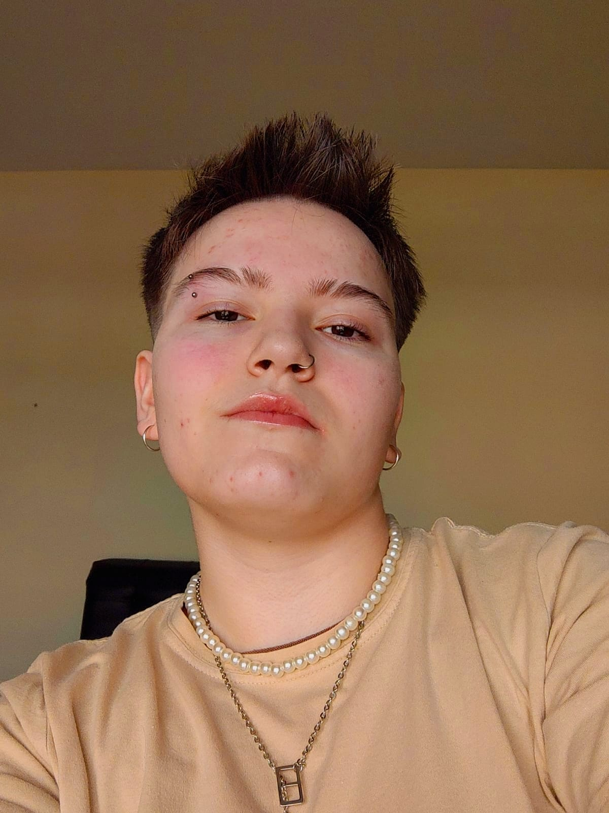

Olá! Sou Fernanda Larocca Desenvolvedora Back-end
Desenvolvedora web back-end, tenho conhecimento nas liguagens PHP usando o framework Laravel. Estou no quarto período da faculdade de Análise e Desenvolvimento de Sistemas. Atualmente atuo como estagiária de Desenvolvimento Back-end na empresa Let's Sistemas.
Saiba Mais!
